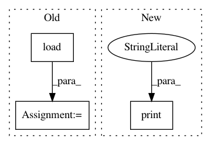

34111c5ab8972864efff82a83262842c4c92806b,celer/datasets/climate.py,,load_climate,#,110
Before Change
def load_climate():
try:
X = np.load(pjoin(CELER_PATH, "preprocessed", "climate_data.npy"))
y = np.load(pjoin(CELER_PATH, "preprocessed", "climate_target.npy"))
except FileNotFoundError:
lx, Lx = 14, 17 // Dakar
X, y = target_region(lx, Lx)
return X, y
After Change
download_climate(replace=replace)
lx, Lx = 14, 17 // Dakar
print("Preprocessing and loading target region...")
X, y = target_region(lx, Lx)
return X, y
In pattern: SUPERPATTERN
Frequency: 3
Non-data size: 3
Instances
Project Name: mathurinm/celer
Commit Name: 34111c5ab8972864efff82a83262842c4c92806b
Time: 2020-03-05
Author: mathurinm@users.noreply.github.com
File Name: celer/datasets/climate.py
Class Name:
Method Name: load_climate
Project Name: philipperemy/keras-tcn
Commit Name: 0cfe82c6beb9a28a5ff7da81b86fa0e93c388f14
Time: 2019-11-20
Author: premy@cogent.co.jp
File Name: tasks/save_reload_model.py
Class Name:
Method Name:
Project Name: richzhang/colorization-pytorch
Commit Name: 81942b345eb432b44ff3e4cda05fe71ce8ac7fde
Time: 2018-08-25
Author: rzhang88@gmail.com
File Name: test_sweep.py
Class Name:
Method Name: